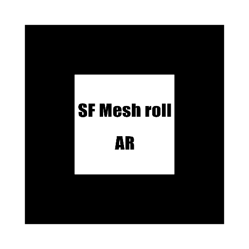

使い方
- 下のボタンを押してカメラを起動します。
- カメラの使用許可を「許可」にしてください。
- 下のマーカーをカメラの枠内に収まるようにかざしてください。
カメラ起動中にスクリーンショットで画像保存が可能です。
対象のマーカー：

※この画像を印刷するか、別の画面に表示して読み取ってください。
ご利用前の注意点
- 推奨ブラウザ: 必ず Safari（iPhone）または Chrome（Android）で開いてください。
- SNSアプリからのアクセス: LINEやInstagram等のアプリ内画面ではAR機能が動きません。画面右上（または右下）にある「…（3点リーダー）」をタップし、「Safariで開く」または「ブラウザで開く」を選択してからお楽しみください。
- Android端末をご利用の方へ: 一部の機種では、初回のみGoogleのARアプリ（Google Play開発者サービス(AR)）のインストールを求められる場合があります。画面の指示に従って進めてください。